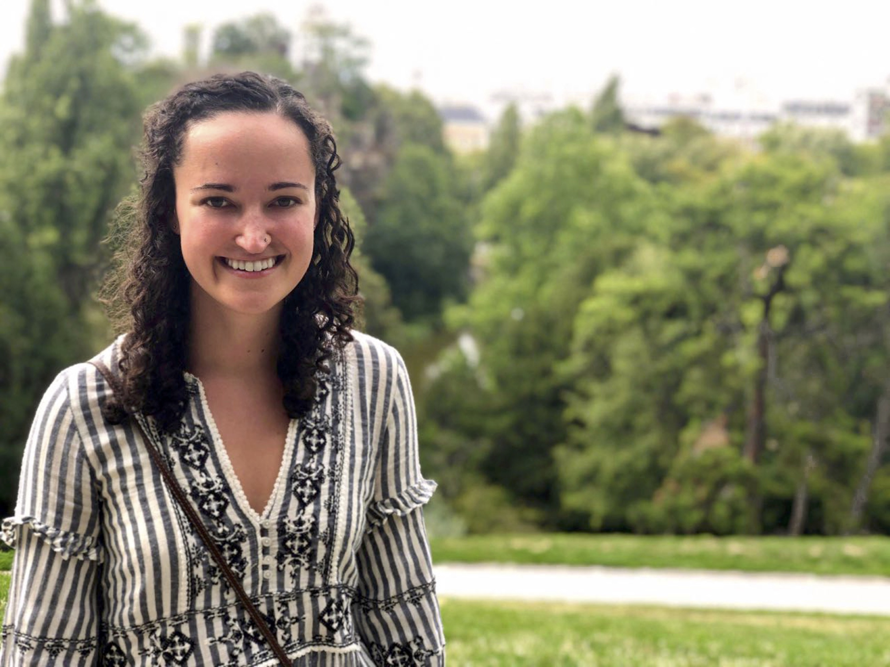

I'm a graduate student at Boston University in the Graduation Program for Neuroscience, specializing in computational neuroscience.
My doctoral research is on the development of biomarkers and statistical models to understand brain function and dysfunction. In particular, my research has been on childhood epilepsy and Angelman syndrome. I have been working jointly with Mark Kramer at Boston University in the Neurodata and Modeling lab and with Catherine Chu at MGH in the Chu lab.